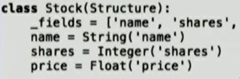
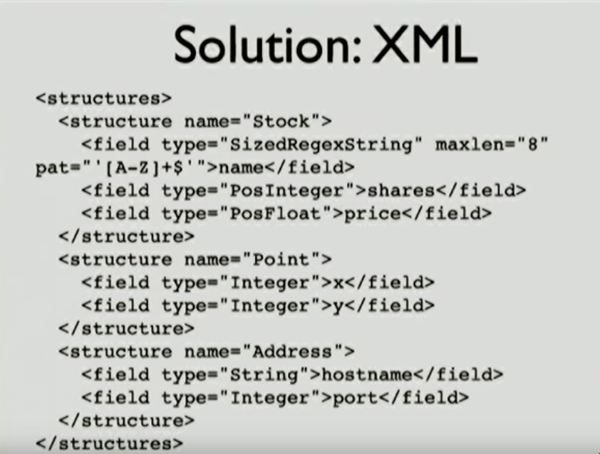

Great talk on decorators, metaclasses, descriptors, signatures etc.
https://www.youtube.com/watch?v=sPiWg5jSoZI
Slides available here
Metaclasses and customized type Descriptors is how ORM/Django does customized/typed fields, like:

Keyword-only arguments can be used to compose some method call up through the MRO:

Some cooler stuff later in the talk, that talks about implementing importlib loaders, to be able to import XML files that describe classes and create them at runtime using exec. Probably not something you’d ever do (maybe to implement some sort of DSL, though?), but is good to know the possibilities.
